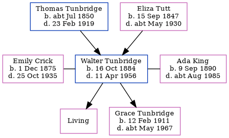

Walter Tunbridge 1884 - 1956
[ Home ] | [ Calendar ] | [ Surnames Index ] | [ Errors ] | [ Family History ]A van driver grocers and the 4th of 5 children of Thomas Tunbridge (a dairyman) and Eliza Tutt (a general servant), Walter Tunbridge, the first cousin twice-removed on the father's side of Nigel Horne, was born in Hougham, Kent, England on 16 Oct 18841,2,3,4, was baptised there on 25 May 1898, the same day as his brothers Frank and Albert was married twice - to Emily Crick (on 27 Aug 1907 in Hougham) Ada King (c. May 1939 in Woolwich, London, England, following the death of Emily Florence Elizabeth on 25 Oct 1935)6. He had 2 children, both with Emily Crick: Florence Elizabeth and Grace Clara.
During his life, he was living at his birthplace on 5 Apr 18918; in Dover, Kent, England in 19012 (the same place as his mother had been living in 1871); at 5 Eaton Road in Dover on 31 Mar 19017; at Noahs Ark Road in Dover on 2 Apr 19119 - less than a mile from his sister Lily who was living at 22 Clarendon Street in Dover; at 70 Granby Road, Eltham, London on 19 Jun 192110; in Eltham, London, England in 1932; and at 19A Moira Road in Eltham on 29 Sept 1939 following the death of his wife on 25 Oct 1935 and in 1956. In 1921 he was working at Woolwich Arsenal Woolwich at -, Woolwich Arsenal, Woolwich, Se18.
He died on 11 Apr 1956 in Woolwich5 and was buried in Greenwich, London, England on 17 Apr 1956 (a day with light rain).
Parents
- Thomas was born c. Jul 1850
- Eliza was born on 15 Sept 1847
Children
- Grace Clara was born on 12 Feb 1911
Citations
- 1891 England Census Online publication - Provo, UT, USA: The Generations Network, Inc., 2005.Original data - Census Returns of England and Wales, 1891. Kew, Surrey, England: The National Archives of the UK (TNA): Public Record Office (PRO), 1891. Data imaged from The National
- 1901 England Census Online publication - Provo, UT, USA: The Generations Network, Inc., 2005.Original data - Census Returns of England and Wales, 1901. Kew, Surrey, England: The National Archives of the UK (TNA): Public Record Office (PRO), 1901. Data imaged from the National (Relation to Head of House: Son)
- 1911 England Census Online publication - Provo, UT, USA: Ancestry.com Operations, Inc., 2011.Original data - Census Returns of England and Wales, 1911. Kew, Surrey, England: The National Archives of the UK (TNA), 1911. Data imaged from the National Archives, London, England.
- England & Wales, FreeBMD Birth Index, 1837-1915 Online publication - Provo, UT, USA: The Generations Network, Inc., 2006.Original data - General Register Office. England and Wales Civil Registration Indexes. London, England: General Register Office. © Crown copyright. Published by permission of the Cont
- England & Wales deaths 1837-2007 - Findmypast
- 1911 England Census Online publication - Provo, UT, USA: Ancestry.com Operations, Inc., 2011.Original data - Census Returns of England and Wales, 1911. Kew, Surrey, England: The National Archives of the UK (TNA), 1911. Data imaged from the National Archives, London, England.
- 1901 England, Wales & Scotland Census - Findmypast (was age 16 and the son of the head of the household)
- 1891 England, Wales & Scotland Census - Findmypast (was age 6 and the son of the head of the household)
- 1911 Census for England & Wales - Findmypast (was age 27 and the head of the household)
- 1921 Census Of England & Wales - Findmypast (was age 37 and the head of the household)
Media
Walter Tunbridge - probate
26 Aug 1932 - Dover Express - Silver Wedding Notice

England & Wales deaths 1837-2007 - BMD/D/1956/2/AZ/001009/092
Kent, Canterbury Archdeaconry marriages 1538-1928 - GBPRS/CANT/M/97058686/1
England & Wales marriages 1837-2008 - BMD/M/1907/3/AZ/000427/021
England & Wales births 1837-2006 - BMD/B/1884/4/AZ/000579/370
Kent, Canterbury Archdeaconry baptisms 1538-1912 - GBPRS/CANT/B/96323294
1939 Register Transcription - TNA-R39-0659-0659H-016-34
England & Wales marriages 1837-2008 - BMD/M/1939/2/AZ/001480/090
1891 England, Wales & Scotland Census - GBC/1891/0005982762
1911 Census for England & Wales - GBC/1911/RG14/04611/0137/1
Family Tree
Map
Generated by ged2site. Last updated on Jul 3, 2024
Known Issues
Burial date (17 Apr 1956) has no citations
Residence record for 1956 contains no citation
Residence record for 29 Sep 1939 contains no citation
Residence record for 1932 contains no citation
May have been living with mother on 5 Apr 1891, but the addresses don't match or aren't detailed enough to be sure
May have been living with father on 5 Apr 1891, but the addresses don't match or aren't detailed enough to be sure
Listed in the residence for 1932, but spouse Emily Crick is not